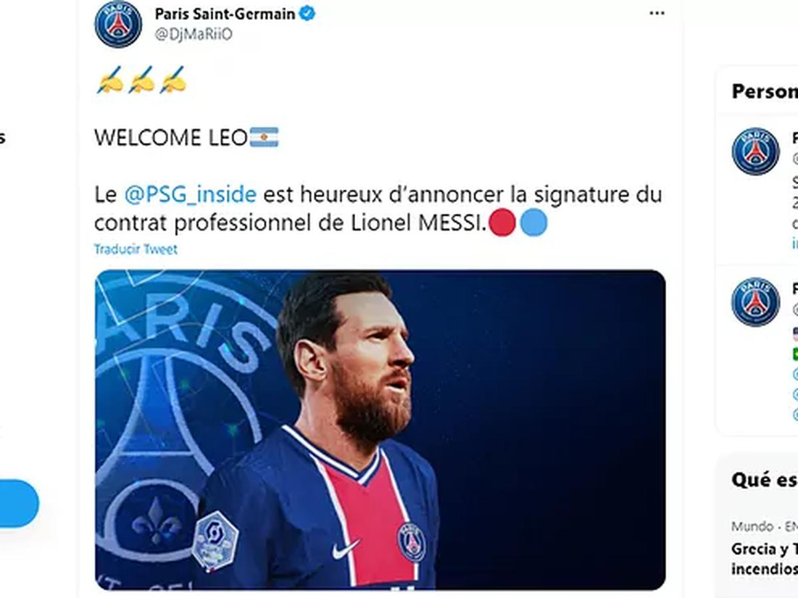

Lo que está pasando ahora...
Únete a Twitter hoy mismo.
Tras la conferencia de prensa que brindó ayer para despedirse del Barcelona, todo Francia espera a Messi, que en las próximas horas firmaría con el Paris Saint-Germain.

Tras la conferencia de prensa que brindó ayer para despedirse del Barcelona, todo Francia espera a Messi, que en las próximas horas firmaría con el Paris Saint-Germain.